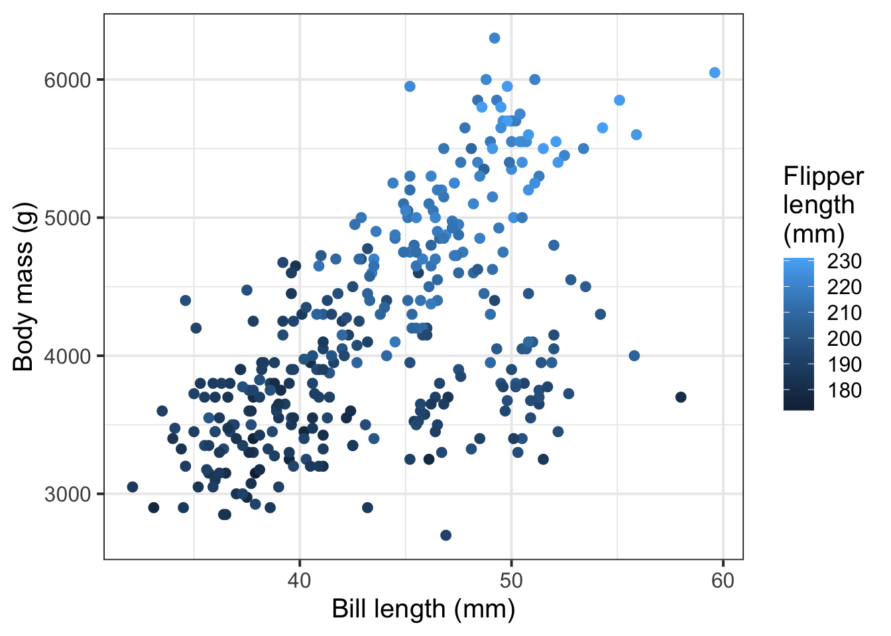
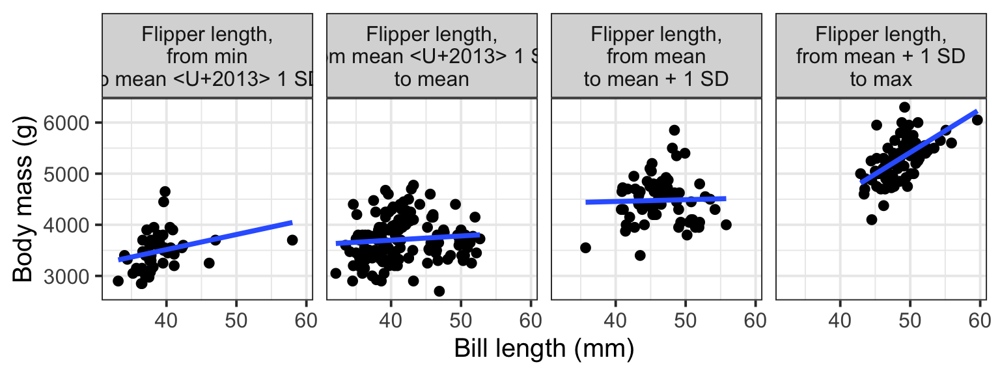
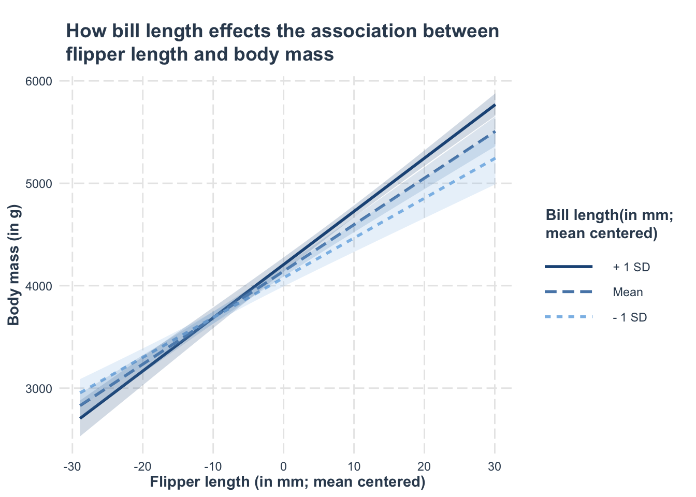
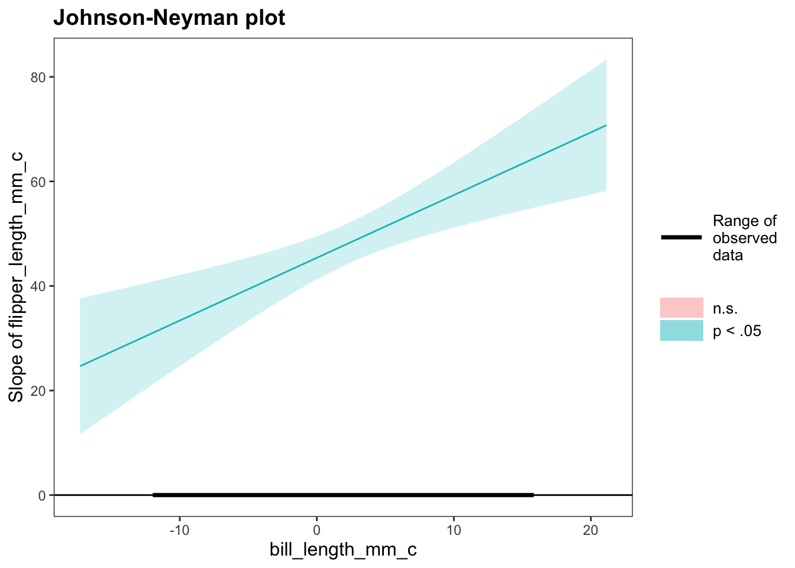

library(palmerpenguins)Numeric/numeric example
RQ: Does the influence of bill length on body mass vary depending on flipper length?
Here we are using the palmer penguins dataset1. The dataset contains a variety of information for a total of 344 adult penguins, including body measurements (bill length (bill_length_mm; measured in mm)/depth (bill_length_mm; measured in mm), flipper length (flipper_length_mm; measured in mm), body mass (body_mass_g; measured in grams)) for male and female (sex) penguins from three species (species; categorised as Adelie, Chinstrap, or Gentoo) across three Antarctic islands (island; categorised as Biscoe, Dream, or Torgersen) from 2007-2009 (year).
The relevant variables for our RQ are bill_length_mm, body_mass_g, and flipper_length_mm.
Summarise/describe data
Because all variables are continuous, we can use psych::describe() to generate our summary statistics table.
penguins |>
# Select only the variables we want in the table
select(bill_length_mm, body_mass_g, flipper_length_mm) |>
# Give the variables more readable names
rename(
'Bill length (mm)' = bill_length_mm,
'Body mass (g)' = body_mass_g,
'Flipper length (mm)' = flipper_length_mm
) |>
# Use describe() from the psych package to get descriptive stats
psych::describe() |>
# Select only the summary stats we care about
select(n, mean, sd, min, max) |>
# Give these stats more readable names
rename("N" = n, "Mean" = mean, "SD" = sd, "Minimum" = min, "Maximum" = max) |>
# kable() from the kableExtra package formats the table nicely
kableExtra::kable(
caption = "Descriptive statistics for penguins' bill length, body mass, and flipper length",
digits = 2
) |>
kableExtra::kable_styling()| N | Mean | SD | Minimum | Maximum | |
|---|---|---|---|---|---|
| Bill length (mm) | 342 | 43.9 | 5.46 | 32.1 | 59.6 |
| Body mass (g) | 342 | 4201.8 | 801.95 | 2700.0 | 6300.0 |
| Flipper length (mm) | 342 | 200.9 | 14.06 | 172.0 | 231.0 |
Visualise data
It’s often a little tricky to visualise how three continuous variables are all interrelated.
One way is to use the x axis for one predictor, the y axis for the outcome, and to colour by the second predictor:
penguins |>
ggplot(aes(x = bill_length_mm, y = body_mass_g, colour = flipper_length_mm)) +
geom_point() +
labs(
x = 'Bill length (mm)',
y = 'Body mass (g)',
colour = 'Flipper\nlength\n(mm)'
)
Another (potentially clearer, but more complicated) way is to define “cut points” in the range of the second predictor, chunk together those values, and essentially treat each chunk as a level of a categorical predictor. For example, if we use the cut points of the mean, the mean – 1 SD, and the mean + 1 SD, we get:
penguins |>
mutate(
flipper_length_mm_bin = cut(
flipper_length_mm,
# define the cut points
breaks = c(
min(flipper_length_mm , na.rm = T), # the bottom cut point = the min
mean(flipper_length_mm, na.rm = T) - sd(flipper_length_mm, na.rm = T),
mean(flipper_length_mm, na.rm = T),
mean(flipper_length_mm, na.rm = T) + sd(flipper_length_mm, na.rm = T),
max(flipper_length_mm , na.rm = T) # the top cut point = the max
),
include.lowest = TRUE,
# label each interval between the cut points
labels = c(
'Flipper length,\n from min \nto mean – 1 SD',
'Flipper length,\n from mean – 1 SD \nto mean',
'Flipper length,\n from mean \nto mean + 1 SD',
'Flipper length,\n from mean + 1 SD \nto max'
)
)
) |>
filter(!is.na(flipper_length_mm_bin)) |> # drop any NAs in this column
ggplot(aes(x = bill_length_mm, y = body_mass_g)) +
facet_wrap(~flipper_length_mm_bin, nrow = 1) +
geom_point() +
geom_smooth(method = 'lm', se = F) +
labs(
x = 'Bill length (mm)',
y = 'Body mass (g)'
)
(If you use this kind of plot, make sure to say that the cut points are defined only for the purposes of visualisation and not used in the analysis! Otherwise your reader might get confused.)
Set up predictors
No penguins in our dataset had zero mm flipper or bill lengths. We might want to mean centre both of these predictor variables so that we can consider the difference in body mass between penguins with average flipper lengths and average bill lengths.
penguins <- penguins |>
mutate(
flipper_length_mm_c = flipper_length_mm - mean(flipper_length_mm, na.rm = T),
bill_length_mm_c = bill_length_mm - mean(bill_length_mm, na.rm = T)
)Mathematical model specification
\[ \begin{align} \text{body\_mass\_g} ~=~ & \beta_0 + (\beta_1 \cdot \text{flipper\_length\_mm\_c}) + \\ & (\beta_2 \cdot \text{bill\_length\_mm\_c}) ~ + \\ & (\beta_3 \cdot \text{flipper\_length\_mm\_c} \cdot \text{bill\_length\_mm\_c}) + \epsilon \end{align} \]
Write:
$$
\begin{align}
\text{body\_mass\_g} ~=~ & \beta_0 + (\beta_1 \cdot \text{flipper\_length\_mm\_c}) + \\
& (\beta_2 \cdot \text{bill\_length\_mm\_c}) ~ + \\
& (\beta_3 \cdot \text{flipper\_length\_mm\_c} \cdot \text{bill\_length\_mm\_c}) +
\epsilon
\end{align}
$$ H0 and H1
For most RQs that require interaction models, we’re interested in testing the hypothesis that there’s no difference in how some predictor x is associated with the outcome y for different values of z. In other words, we are interested in testing the null hypothesis that the interaction term is zero.
For the model above:
\[ \begin{align} H_0 &: \beta_3 = 0\\ H_1 &: \beta_3 \neq 0\\ \end{align} \]
Write:
$$
\begin{align}
H_0 &: \beta_3 = 0\\
H_1 &: \beta_3 \neq 0\\
\end{align}
$$Fit the model
mdl_nn <- lm(body_mass_g ~ flipper_length_mm_c * bill_length_mm_c, data = penguins)Each row in the summary() output of the model will correspond to one of the estimated \(\beta\)’s in the equation above.
summary(mdl_nn)
Call:
lm(formula = body_mass_g ~ flipper_length_mm_c * bill_length_mm_c,
data = penguins)
Residuals:
Min 1Q Median 3Q Max
-1040.2 -283.1 -23.9 241.9 1241.4
Coefficients:
Estimate Std. Error t value Pr(>|t|)
(Intercept) 4141.488 26.453 156.56 < 2e-16 ***
flipper_length_mm_c 45.391 2.108 21.53 < 2e-16 ***
bill_length_mm_c 11.825 5.316 2.22 0.02679 *
flipper_length_mm_c:bill_length_mm_c 1.200 0.322 3.72 0.00023 ***
---
Signif. codes: 0 '***' 0.001 '**' 0.01 '*' 0.05 '.' 0.1 ' ' 1
Residual standard error: 387 on 338 degrees of freedom
(2 observations deleted due to missingness)
Multiple R-squared: 0.769, Adjusted R-squared: 0.767
F-statistic: 376 on 3 and 338 DF, p-value: <2e-16Interpret results
\(\beta_0\) = (Intercept) = 4141.49
- A penguin with average flipper and bill length is estimated to have a body mass of 4141.49 g.
\(\beta_1\) = flipper_length_mm_c = 45.39
- For a penguin with average bill length, increasing 1 mm of flipper length is associated with an increase of 45.39 g in body mass.
- This estimate is significantly different from zero \((p < .001)\).
\(\beta_2\) = bill_length_mm_c = 11.82
- For a penguin with average flipper length, increasing 1 mm of bill length is associated with an increase of 11.82 g in body mass.
- This estimate is significantly different from zero \((p = .027)\).
\(\beta_3\) = flipper_length_mm_c:bill_length_mm_c = 1.2
- When flipper length increases by 1 mm, the association between bill length and body mass is estimated to increase by1.2.
- Or: When bill length increases by 1 mm, the association between flipper length and body mass is estimated to increase by 1.2.
- This estimate is significantly different from zero \((p < .001)\).
Visualise the model
We can do this using the probe_interaction() function from the interactions package.
In terms of of specification, it might be useful to look up the helper function (i.e., ?probe_interaction). As a quick guide:
model =: The name model to be used
pred =: The continuous predictor variable that will appear on the x-axis
modx =: The continuous moderator variable
interval =: If we sayTRUE, then confidence/prediction intervals will be plotted around the line
jnplot =: Since we are looking at a numeric x numeric interaction, we want to specify that this isTRUE
Remember to give your plot informative titles/labels. You, for example, likely want to give your plot:
- a clear and concise title (specify
main.title =)
- axis labels with units or scale included (specify
x.label =andy.label =)
- a legend title (specify
legend.main =)
library(interactions)
plt_mdl_nn <- probe_interaction(
model = mdl_nn,
pred = flipper_length_mm_c,
modx = bill_length_mm_c,
cond.int = T,
interval = T,
jnplot = T,
main.title = "How bill length effects the association between\nflipper length and body mass",
x.label = "Flipper length (in mm; mean centered)",
y.label = "Body mass (in g)",
legend.main = "Bill length(in mm;\nmean centered)"
)From the above, we can choose to extract different information/visualisations of simple slopes (this will likely be dependent upon the question(s) you are trying to answer) - the interaction plot, simple slopes analysis only, Johnson-Neyman plot only, or both simple slopes and Johnson-Neyman plot:
Interaction plot
The default simple slopes analysis selects \(z\)-values for us at which to test the slope. The defaults are: the mean of \(Z\), and \(+1~SD\) and \(-1~SD\) from the mean:
plt_mdl_nn$interactplot
Simple slopes and their significance tests
Here we can look a the significance of each slope:
plt_mdl_nn$simslopes$slopes Value of bill_length_mm_c Est. S.E. 2.5% 97.5% t val. p
1 -5.46e+00 38.8 3.19 32.6 45.1 12.2 1.38e-28
2 4.63e-15 45.4 2.11 41.2 49.5 21.5 2.38e-65
3 5.46e+00 51.9 2.22 47.6 56.3 23.4 1.40e-72Johnson-Neyman plot
The Johnson-Neyman plot allows us to visualise the regions of significance - i.e., it identifies the range of the moderator variable \((Z)\) where the effect of the independent variable \((X)\) on the dependent variable \((Y)\) is statistically significant (e.g., \(p < .05\)). Outwith these regions, the effect of the independent variable is not significant.
Pointers to help with interpretation of the plot:
- x-axis = Values of moderator variable \((Z)\)
- y-axis = The conditional effect (slope) of the independent variable \((X)\) on the dependent variable \((Y)\)
- Bold black line (range of observed data) = The actual range of the moderator variable \((Z)\) values within the dataset. This helps with interpretation of results, and more importantly, avoid extrapolation - i.e., should help to ensure that the interpretations of the plot are data-driven and based on the actually observed data
- Zero line = The horizontal line at \(y = 0\) indicates the point where the effect of the IV \((X)\) on the DV \((Y)\) is neither positive or negative
- Shaded areas = Regions where the effect is significant (e.g., outside the bounds of 95% confidence intervals that include zero) are highlighted in blue. Regions where the effect is non-significant (e.g., crosses the zero line, inside the bounds of the 95% confidence intervals that include zero) are highlighted in red
plt_mdl_nn$simslopes$jnplot
Footnotes
Horst, A. M., Hill, A. P., & Gorman, K. B. (2020). palmerpenguins: Palmer Archipelago (Antarctica) penguin data. R package version 0.1.0. https://allisonhorst.github.io/palmerpenguins/ doi: 10.5281/zenodo.3960218↩︎